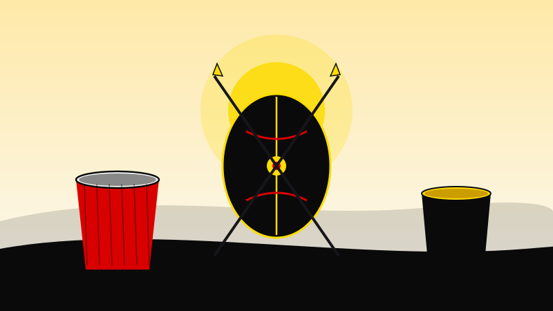
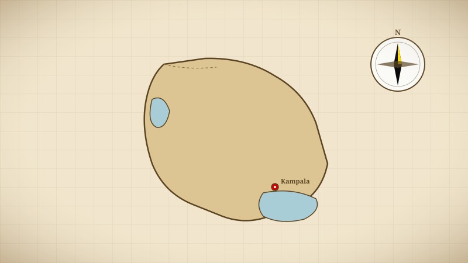

Heritage
A timeline of the Republic
Key moments in Uganda’s journey — independence, institutions and the story of a nation.
Chapter 01 · Pre-1894
Pre-colonial kingdoms
Buganda, Bunyoro-Kitara, Toro, Ankole and other kingdoms and chiefdoms flourish across the region.

Chapter 02 · 1894
British Protectorate
Uganda is declared a British Protectorate, ushering in a period of colonial administration.

Chapter 03 · 9 Oct 1962
Independence
Uganda gains independence from Britain, with Milton Obote as the first Prime Minister.

Chapter 04 · 1971 – 1979
Idi Amin era
A period of military rule that ended with the Uganda – Tanzania war.
Chapter 05 · 1986
NRM Government
The National Resistance Movement, led by Yoweri Kaguta Museveni, takes power and begins national reconstruction.
Chapter 06 · 1995
New Constitution
Uganda adopts a new Constitution establishing the current framework of governance.

Chapter 07 · Today
Vision 2040
Uganda pursues a transformation agenda anchored in industrialisation, infrastructure, education and regional integration.

End of Record
For God and my Country.